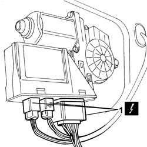
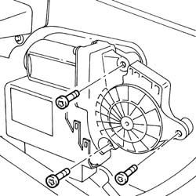
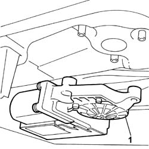

7005M28 FRONT SIDE DOOR ELECTRICALLY OPERATED WINDOW MOTOR - R R WITH DOOR PANEL-MOUNT FRAME REMOVED
- Path
- Procedures > 70 FITTINGS > 7005 PASSENGER COMPARTMENT FRONT SIDE DOORS > 7005M FRONT ELECTRIC WINDOWS > 7005M28 FRONT SIDE DOOR ELECTRICALLY OPERATED WINDOW MOTOR - R R WITH DOOR PANEL-MOUNT FRAME REMOVED
- Kind
- repair procedure (removal / refitting; the operation number is the code)
- Applies to
- all engines; all production periods
- Interactive page
- https://sloeber94.github.io/elrnDB-fUlss/en/#/179007681
Applies to: all engines; all production periods
 Removing
Removing
 Refitting
Refitting1. Disconnect the electrical connections for the motor.

Applies to: all engines; all production periods
1. Undo the bolts fixing the motor.

Applies to: all engines; all production periods
1. Remove the front door electric window motor.

Applies to: all engines; all production periods
Refitting
Removing- Position the front door electric window motor.
- Tighten the bolts fixing the electric window motor to torque.
- Connect the electrical connections for the electric window motor.